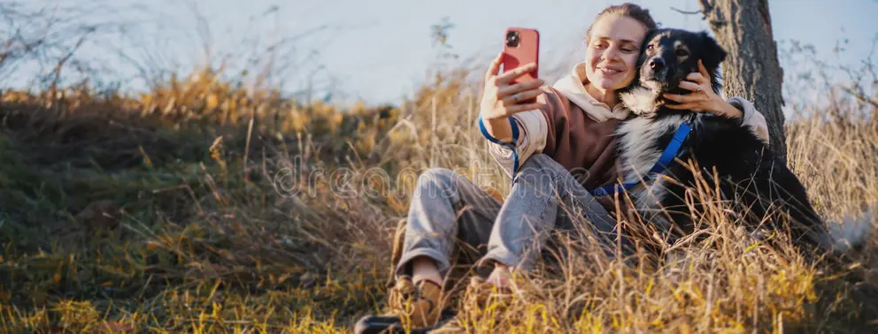
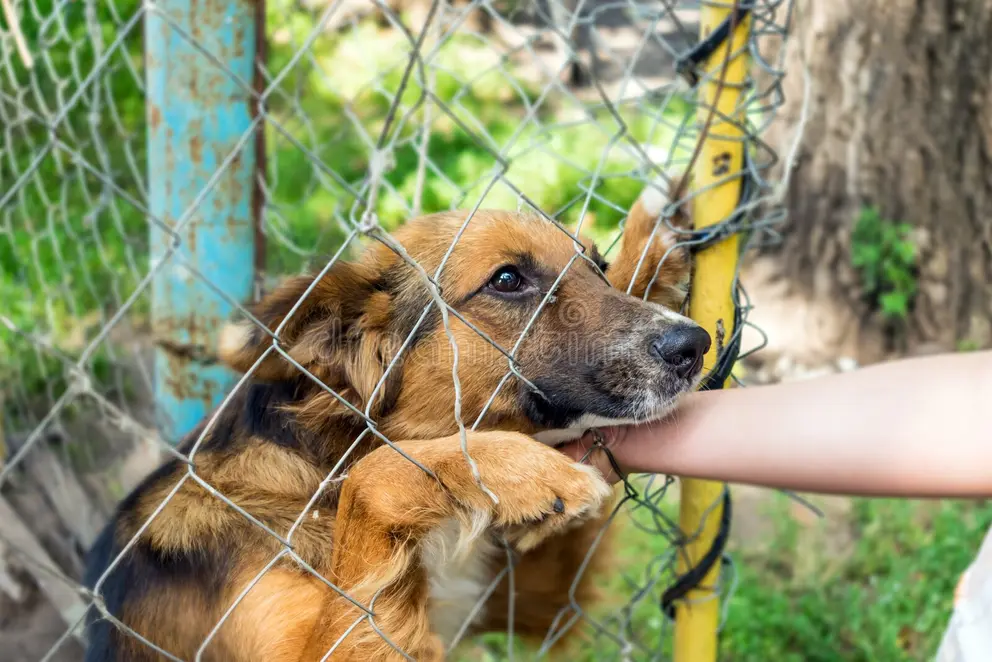
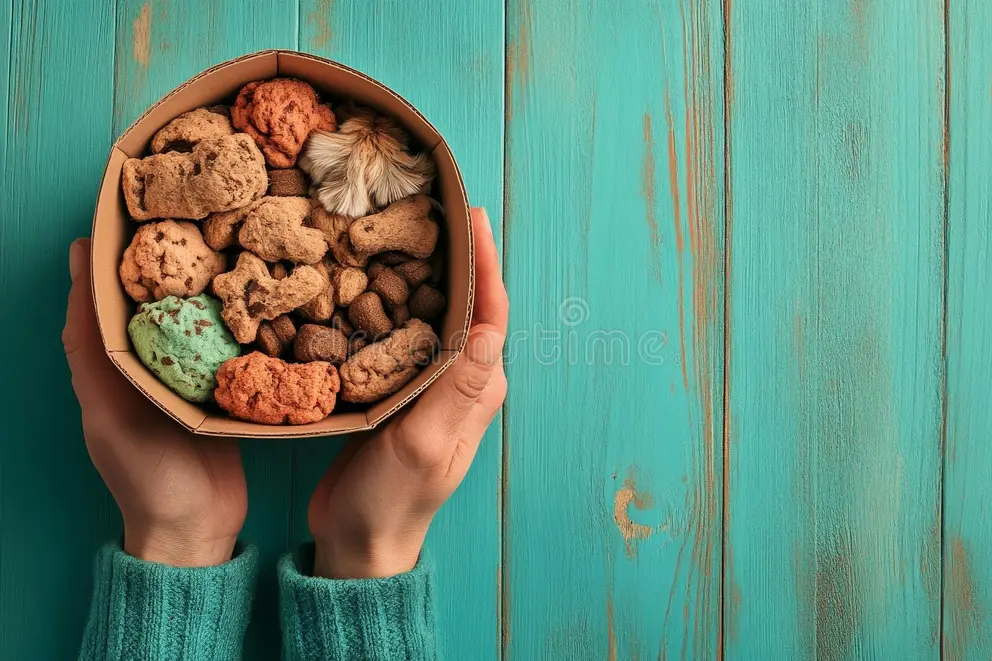
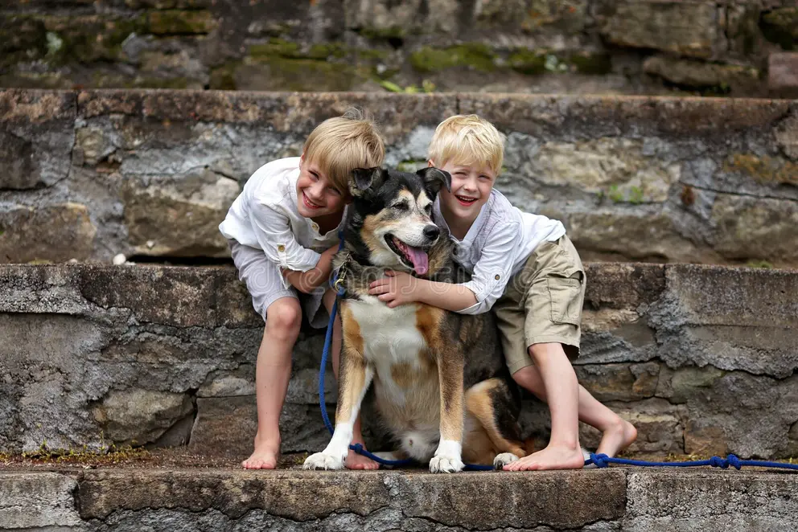
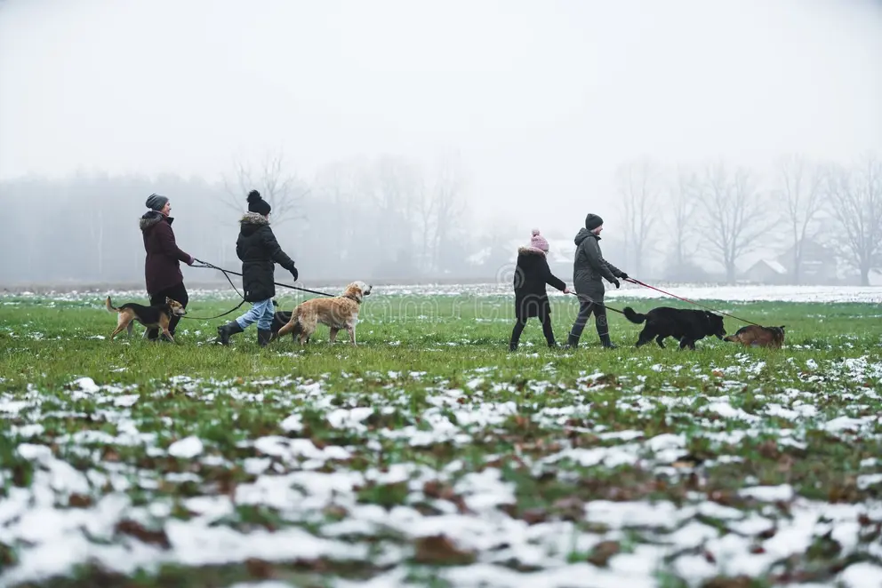
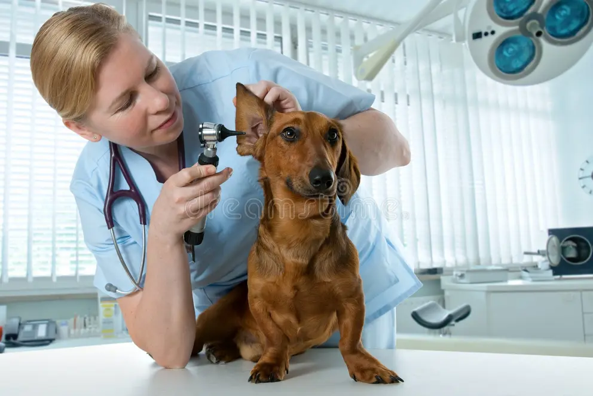
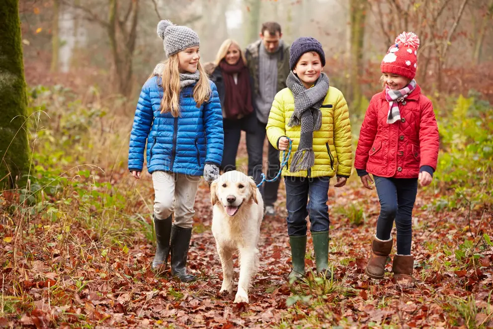

Manada conecta comercio y causa: comprás el alimento que tu mascota ya necesita, elegís a qué refugio ayuda tu compra, y ves el impacto en tiempo real. Sin sobreprecio, sin intermediarios invisibles.

Mercado de alimento para mascotas en Argentina (2024)
Crecimiento anual proyectado del mercado
Del presupuesto en mascotas se va en alimento
Hogares argentinos tienen una mascota
Más de 6 millones de perros y gatos viven en situación de calle en Argentina. Los refugios que los sostienen dependen casi 100% de donaciones voluntarias, rifas y ferias — sin apoyo estatal sistemático, mientras la inflación aumenta el abandono y erosiona la capacidad de donar.
Mientras tanto, el mercado de alimento para mascotas mueve USD 1.500 millones al año en Argentina y crece a doble dígito. Nadie había integrado todavía comercio, servicios y causa social en una sola plataforma.

La empresa y la app funcionan en paralelo para sostener, con la misma fuerza, un fondo permanente para el bienestar animal.
Comercializamos alimento de marcas reconocidas bajo convenio. Es el ancla de recurrencia: el cliente vuelve todos los meses porque su mascota necesita comer.
Calendarización, veterinaria on-demand, mascota perdida, adopciones y marketplace. Cuantos más servicios usa el dueño, más difícil es que se vaya.
Administra el fondo del 10% de las ventas y las donaciones, y lo distribuye entre los refugios asociados según programas de impacto medible.
Cada feature resuelve un dolor real y genera su propio modelo de monetización.
Programá la frecuencia de entrega, mismo precio que la compra puntual, sin cargos ocultos.
Margen del productoDestiná tu 10% a un refugio específico y mirá en tiempo real qué generó tu compra.
Fidelización / LTVUn toque para acceder a veterinarios validados con guardia activa, por distancia y especialidad.
Comisión por derivaciónDescribí los síntomas antes de la consulta: orientación preliminar y resumen clínico para el veterinario.
Comisión + suscripción premiumConsultas programadas a domicilio o en consultorio, con calificaciones y disponibilidad real.
Suscripción + comisión por turnoAlerta geolocalizada a toda la comunidad cercana con foto y datos, en un solo toque.
Gratis · premium en fase 2Juguetes, camas, correas y accesorios curados, con posibilidad de venta de terceros.
Margen / comisiónPublicaciones de refugios y particulares, matching por compatibilidad y seguimiento post-adopción.
Publicaciones destacadas
Cada refugio tiene un perfil público con métricas de impacto. El que más visibiliza su trabajo, más apoyo recibe — con un piso garantizado para proteger a los más pequeños.
Financiamiento mensual del fondo del 10% + alimento subsidiado.
Visibilidad en la app y redes del grupo, con ranking mensual.
A cambio: contenido mensual, campañas de adopción y métricas de reporte.




Dejá tu email para enterarte del lanzamiento, sumar tu refugio como aliado o ser parte del piloto.